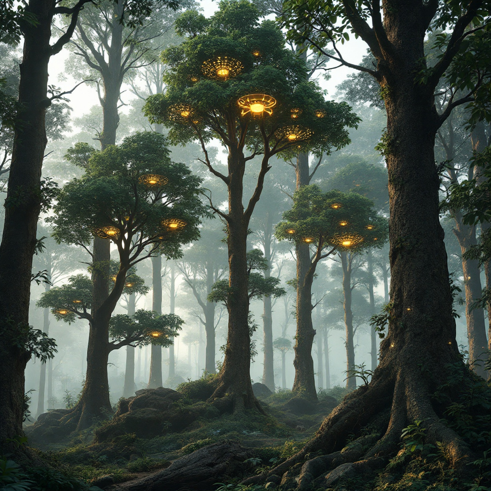
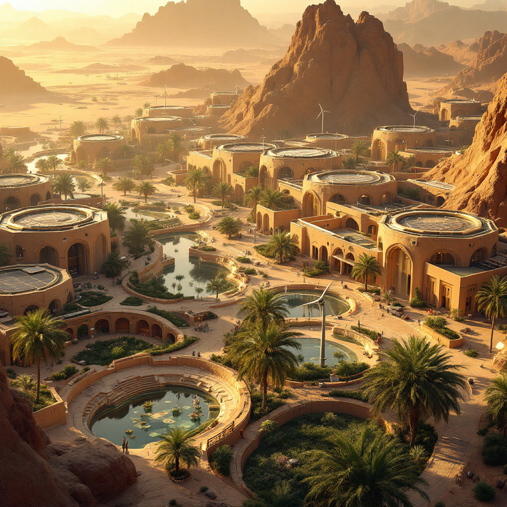

Hyperrealistic underwater scene, synchronized tidal turbines spinning, aurora borealis-inspired light emissions above ocean surface, fluid gradients of indigo and violet blending metallic turbine blades with marine organism, cinematic depth, 8k. Avoid to dramatic and intense image

Hyperrealistic desert solar farm, angular matte-finished panels arranged in symmetrical mandala patterns casting kaleidoscopic shadows on weathered sandstone cliffs, textured erosion patterns contrasting geometric precision, soft amber gradients of dawn light illuminating panel arrays, diffuse shadows creating fractal reflections on rock surfaces, cinematic depth, 8k
Hyperrealistic floating cityscape with angular skyscrapers draped in vertical mangrove forests, bioluminescent roots glowing turquoise at night, modular platforms merging coastal architecture and tidal ecosystems, dynamic gradients of coral-orange sunsets reflecting on water, matte-finished solar-panel walkways connecting green zones, cinematic depth, 8k

Hyperrealistic forest scene with towering trees embedded with matte-finished metallic PV leaves (biomimetic solar cells
), glowing drones hovering above deforested zones deploying seed pods, organic tree forms fused with angular photovoltaic textures, soft bioluminescent glows (amber-green) tracing energy pathways between leaves and drones, textured bark blending with solar cell circuitry, diffuse dawn light filtering through canopy, cinematic depth, 8k
Hyperrealistic public plaza with kinetic sculptures resembling abstracted wind turbines, matte-finished modules rotating in response to foot traffic, pulsating LED grids (sapphire and amber) tracing motion paths on textured concrete, fluid motion trails syncing with pedestrian movement, geometric energy conduits embedded in walkways, soft gradients of dawn sunlight blending with responsive bioluminescence, cinematic depth, 8k
Hyperrealistic streetscape with algae-filled glass panels glowing cyan-gold at night, organic curves of self-illuminating bioreactors merging into neon-lit infrastructure, tessellated sidewalks reflecting bioluminescent light trails, dynamic gradients of daylight photosynthesis to nocturnal energy emission, prismatic fractal patterns in glass, cinematic depth, 8k
Hyperrealistic floating cityscape with angular skyscrapers draped in vertical mangrove forests, bioluminescent roots glowing turquoise at night, modular platforms merging coastal architecture and tidal ecosystems, dynamic gradients of coral-orange sunsets reflecting on water, matte-finished solar-panel walkways connecting green zones, cinematic depth, 8k
Hyperrealistic desert cityscape at dusk, angular geometric architecture with matte solar-paneled rooftops, orbital satellites emitting precision-focused laser grids (soft gold-cyan hues) into ground receptors, holographic energy corridors aligning with city infrastructure, textured sandstone buildings blending with celestial geometry, diffuse atmospheric light scattering, cinematic depth, 8k
Hyperrealistic rural village with solar-paneled rooftops and micro-wind turbines, interconnected by glowing golden-sapphire energy threads flowing between homes and fields, tessellated landscape blending hexagonal solar arrays and arched turbine silhouettes, prismatic light trails tracing decentralized power grids, bioluminescent glows at dusk, cinematic depth, 8k
Hyperrealistic mountain city carved into cliff faces, terraced farms and glass-domed habitats cascading down slopes, angular solar arrays mimicking alpine rock patterns, bioluminescent fungi lining pathways in cool indigo hues, diffuse dawn light piercing through mist to highlight vertical greenery, cinematic depth, 8k
Hyperrealistic geodesic dome city with angular crystalline architecture, crimson magma veins erupting through fractal-patterned foundations, bioluminescent geothermal glows illuminating interconnected triangular/hexagonal structures, dynamic gradients of molten gold and obsidian, volcanic fractals merging with geometric precision, cinematic depth, 8k
Futuristic renewable energy machine, light blue tones, glowing LED light strips, set against a breathtaking background of a majestic waterfall cascading down rocky cliffs, towering mountains bathed in soft light, serene atmosphere, high-detail, ultra-detailed, vibrant and dynamic elements, cinematic quality, emphasizing innovation and sustainability.
Hyperrealistic cliffside vista, Archimedes spiral-blade turbines intertwined with swirling cyan wind ribbons, fluid gradients merging angular turbine geometry and atmospheric motion, bioluminescent glows at dawn, prismatic light trails, cinematic depth, 8k
Hyperrealistic holographic Earth projection, matte-finished continents textured with renewable energy hotspots (solar farms, wind arrays), interconnected by pulsating bioluminescent strands (soft gold-cyan hues) symbolizing transnational energy grids, data-visualization-style geometric overlays mapping energy flow, dynamic gradients of atmospheric scattering
blending with planetary realism, cinematic depth, 8k
Hyperrealistic Antarctic landscape with angular geothermal plants resembling ice-blue crystalline structures, matte-finished surfaces glowing softly via bioluminescent heat diffusion, smooth sapphire energy conduits connecting to distant research stations, sharp fractal ice formations (inspired by blue ice moraines) contrasting geometric power grids, diffuse aurora australis light reflecting off snow, cinematic depth, 8k
Hyperrealistic cityscape, angular skyscrapers clad in tessellated solar panels pulsing golden light, prismatic surfaces refracting fractal patterns, glowing energy grids connecting buildings, dynamic gradients of sunlight transitioning dawn to dusk, cinematic lighting, ultra-detailed, 8k

Hyperrealistic desert city with hexagonal solar-paneled towers shaded by date palm canopies, underground aquifer-fed gardens visible through glass floors, angular wind turbines aligned with ancient wadi channels, warm gradients of golden-hour light casting long shadows, matte sandstone buildings merging with irrigated green zones, cinematic depth, 8k
Hyperrealistic Arctic fusion reactor, swirling plasma containment chamber radiating auroral hues (emerald, crimson, violet), geometric force fields refracting light into prismatic patterns, bioluminescent glows mirroring northern lights dynamics, dynamic gradients of ionized particles transitioning through magnetic confinement, cinematic depth, 8k
Hyperrealistic dam spillway transforming into a glowing neural network, molten metal textures channeling turquoise water into rivers lined with neon-blue bioluminescent algae, circuit-like energy conduits pulsating with light, dynamic gradients of silver and aquamarine, cinematic depth, 8k
Hyperrealistic underwater seascape with bioluminescent coral colonies growing atop submerged tidal generators, angular solar barges floating above with coral-inspired lattice structures, matte-finished turbine blades fused with organic reef textures, dynamic gradients of turquoise and violet light (bioluminescence
solar reflection), diffuse sunlight filtering through water to highlight symbiotic energy systems, cinematic depth, 8k